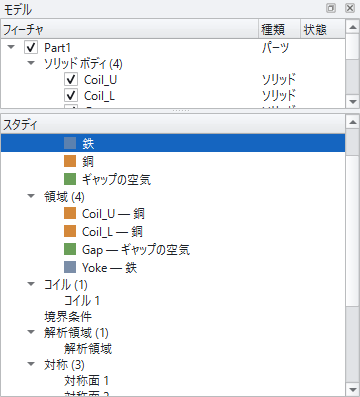
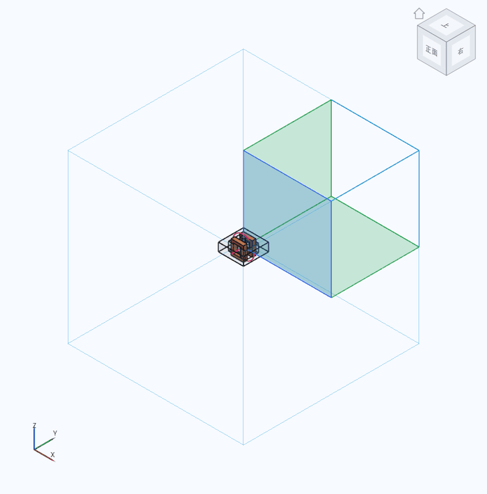
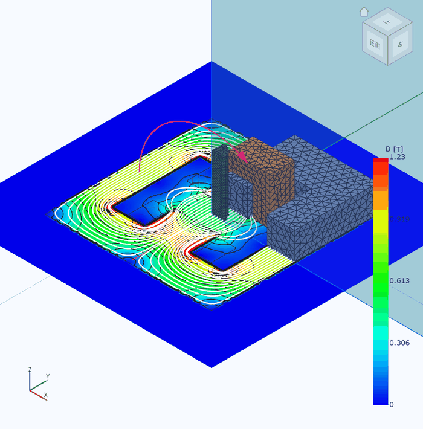
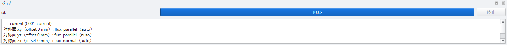

第 16 章
スタディの共通の設定
この章では、どのスタディにも共通の設定を説明します。スタディの作り方と複製、材料と領域、対称面と面の条件、メッシュ、チェックと解析の実行、結果の保存場所です。スタディごとの設定は、第 18〜23 章にあります。
16.1 スタディを作る
スタディは［物理］タブで作ります。種類ごとにボタンがあります。リボンの右上の［+］のメニューと、スタディのブラウザの何もない所の右クリックのメニューからも作れます。
| コマンド | 最初から入っている項目 |
|---|---|
| ［新しい静磁場スタディ］ | 材料「空気」・解析領域・メッシュ・解析の設定 |
| ［新しい共振モードスタディ］ | 材料「真空」・メッシュ・解析の設定・ビーム軸 |
| ［新しいポート解析スタディ］ | 材料「真空」・メッシュ・解析の設定 |
| ［新しい静電場スタディ］ | 材料「空気」・解析領域・メッシュ・解析の設定 |
作ったスタディが、リボンの右上の［スタディ］の欄で選ばれます。リボンのコマンドは、選んでいるスタディ（アクティブなスタディ）に働きます。スタディの種類に合わないコマンド（共振モードのスタディでの［コイル］など）は押せません。


スタディのブラウザの行を選ぶと、プロパティ パネルでその項目を編集できます。値を変えたら［適用］を押します（未適用の変更があると、パネルの下に青い文で知らせます）。
フォルダや行を右クリックすると、そのフォルダの項目を足す・編集するコマンドが出ます（リボンと同じ）。
項目を消すには、行を選んで Del を押すか、右クリックの［削除］を選びます。
スタディの名前は、スタディの行をダブルクリックして変えます。
16.2 スタディを複製する
スタディの行の右クリックの［複製］で、同じ種類のスタディを写せます。条件を少し変えて比べるときに使います。
種類を替えて写すこともできます。共振モードのスタディの右クリックの［ポート解析のスタディとして複製］（逆向きの［共振モードのスタディとして複製］もあります）は、材料・壁・対称面・メッシュを写し、ポート解析に要る項目（解析の設定）を足します。写せない項目（その種類で使えない材料や条件）は写しません。
16.3 材料と領域
スタディの材料は「どんな物質か」、領域は「どのボディがどの材料か」です。同じ鉄でできたボディがいくつあっても、材料「鉄」を 1 つ定義して、各ボディで選ぶだけで済みます。
3D ビューでボディを選んで、リボンの［物理］タブ → ［材料］パネル → ［材料］をクリックします。新しい材料ができ、選んでいたボディに割り当てられます。
プロパティ パネルで名前・種類・値を入れて、［適用］を押します。
材料の種類は、スタディによって違います。
| スタディ | 材料の種類 | 説明 |
|---|---|---|
| 静磁場 | 空気・磁性体・導体（コイル） | 磁性体は比透磁率か B-H 曲線（第 18 章） |
| 共振モード・ポート解析 | 真空・誘電体 | 誘電体は比誘電率・比透磁率・誘電正接 tanδ（第 21 章） |
| 静電場 | 空気・誘電体 | 誘電体は比誘電率だけ（第 23 章） |
| 電子銃 | 空気・誘電体 | 静電場と同じ。コイル・鉄は解析から除く（第 24 章） |
どの材料にも［メッシュの大きさ（0 = 全体の値）］（この材料のボディの中の要素の大きさ。0 なら全体の値）と色があります。
スタディのブラウザの［領域］には、形状のソリッド ボディが全部、ブラウザと同じ名前で並びます。行を選ぶと、プロパティ パネルで材料を選べます。Shift・Ctrl で複数の行を選べば、まとめて同じ材料にできます。
3D ビューで選んだボディに、今の材料を割り当てるには、リボンの［物理］タブ → ［材料］パネル → ［割り当て］をクリックします。
材料を選んでいないボディは、そのスタディの背景の材料（静磁場・静電場・電子銃は空気、共振モードとポート解析は真空）です。
材料の選択肢の最後の［（除外）］は、解析に入れないボディ（ねじ・架台など）です。メッシュにも入りません。
材料を消すと、その材料だったボディは背景の材料に戻ります。
16.4 対称面と面の条件
リボンの［物理］タブ → ［解析領域］パネル → ［対称面］で XY・YZ・ZX の平面を足すと、その平面でモデルを切り、座標が大きい側（+ 側）だけを解きます。［オフセット］で平面をずらせます。対称面 1 つで計算は約半分になり、結果は自動で全体に折り返して表示されます。
切り口の境界の種類は、スタディによって違います。
| スタディ | 境界の種類 | 選び方 |
|---|---|---|
| 静磁場 | 磁束平行・磁束垂直・自動 | 自動はコイルの軸から決める（第 18 章） |
| 共振モード・ポート解析 | 電気壁・磁気壁 | 求めたいモードの対称に合わせる（第 21 章） |
| 静電場 | 電荷ゼロ（電位が対称）・接地（電位が反対称） | 面の向こうの電極の電位で選ぶ（第 23 章） |
面に条件を付けるときは、3D ビューで面を選んでから、条件のコマンド（［磁束平行］・［磁束垂直］・［電気壁］・［磁気壁］・［ポート］・［電極］）をクリックします。面を選ばずに押すと、フォームの［3D で選ぶ］が押された状態で開き、面をクリックするたびに入れる・外すを切り替えます。
［物理］・［メッシュ］・［解析］のタブでは、条件を付けた面を種類の色で塗ります。対称面の板も同じ色です。
| 色 | 条件 |
|---|---|
| 赤 | 電気壁（E-short） |
| 紫 | 磁気壁（M-short） |
| 緑 | 磁束平行 |
| 青 | 磁束垂直 |
| 橙 | ポート |
| 真鍮の色 | 電極（面の電極。電極のボディもこの色で塗ります） |
| 青緑・灰色 | 静電場の対称面の電荷ゼロ・接地 |
対称面の板と解析領域の枠は、［対称面を表示］・［解析領域を表示］で表示を切り替えます。


16.5 メッシュ
形状は、2 次の四面体のメッシュに分けて解きます。要素が小さいほど精度が上がり、時間がかかります。
リボンの［メッシュ］タブ → ［設定］パネル → ［メッシュの設定］で、全体の［要素の大きさ］と次数（2 次が既定）を決めます。
ボディごとの大きさは、材料の［メッシュの大きさ（0 = 全体の値）］で決めます（例: 銅 3 mm、鉄 12 mm）。
リボンの［メッシュ］タブ → ［生成］パネル → ［メッシュ生成］で、メッシュだけを作って表示します（解かない）。解析や電流分布のプレビューのときも作ります。形状とメッシュの設定が変わらなければ前のメッシュを使い回すので、メッシュを確かめてから解析しても、二度は作りません。
［メッシュ］タブでは、最新のメッシュのボディの表面を、材料の色と要素の辺で表示します（自動の空気は描きません）。節点と四面体の数は、終わったときの知らせとジョブのログに出ます。［メッシュを表示］で表示を切り替えます。
メッシュに効く設定（形状、材料の割り当て、メッシュの大きさ、解析領域、対称面など）を変えると、そのメッシュは古いので表示を消します。文書のパラメータの値だけを変えたときは、古いと分からないので作り直してください。


16.6 チェックと解析の実行
リボンの［物理］タブ → ［チェック］パネル → ［チェック］をクリックします。右の［チェック］に、設定の誤り（エラー）と注意（警告）が出ます。行をクリックすると、当てはまる項目が開きます。エラーがあると解析は始まりません。
リボンの［解析］タブ → ［設定］パネル → ［解析の設定］で、スタディの解析の設定（第 18〜24 章）を確かめます。
リボンの［解析］タブ → ［実行］パネル → ［実行］をクリックします。形状を書き出し、別のプロセスでメッシュを作って解きます。下の［ジョブ］に進み具合とログが出ます。

図 16-4 ジョブのドック。段（メッシュ・組み立て・求解・後処理）の進み具合と、ログ。 終わると［結果］タブに切り替わり、結果を表示します（第 17 章）。

解析は別のプロセスで動くので、その間もウィンドウを操作できます。リボンの［解析］タブ → ［実行］パネル → ［停止］で、区切りのよい所で止めます。解析が失敗したときは、ジョブのログに理由が出ます（第 25 章）。
16.7 結果の保存場所
解析の結果は、文書のデータのフォルダ <文書名>.emrm.data\runs\<スタディ>\ に、解析ごとのフォルダ（0001-magnetostatic など）として残ります。中には、解析の入力（job.json）・メッシュ・結果（result.h5）・ログ（log.txt）があります。文書を閉じて開き直しても、前の結果を見られます（第 17 章）。